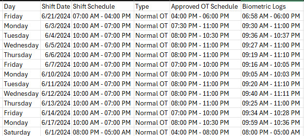
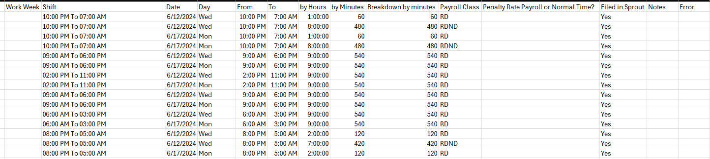
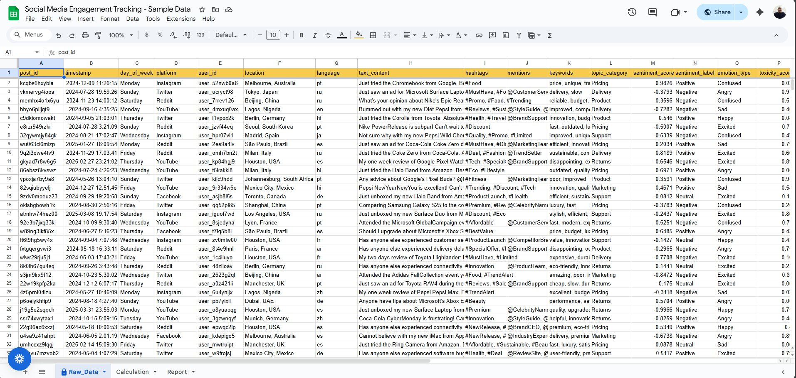
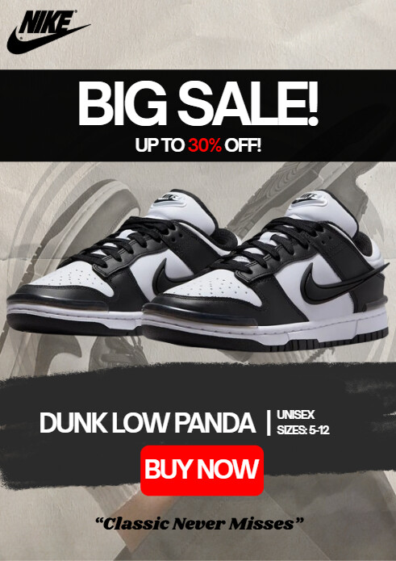

Collaborated on the development and refinement of the Vanguard Men’s Health
website using the GoHighLevel platform, focusing on layout consistency,
content structure, and visual presentation to support a professional,
healthcare-focused brand.
Worked within the GoHighLevel website builder to assist with layout, section organization, and content placement
Refined hero sections, service highlights, CTA placement, and visual flow across key pages
Ensured design consistency, readability, and alignment with branding
Collaborated with the team to improve UX and presentation
Automation


Before
Timesheet Automation using Python(Pandas)
Built an automated timesheet workflow using anonymized attendance data
exported from Sprout, transforming raw biometric logs into a structured,
payroll-ready format while maintaining data confidentiality.
CSV file generated from Sprout containing anonymized shift schedules and biometric logs (Raw Data)
Automated processing converts raw data into a clean, structured timesheet output for payroll review (Output)
All employee-identifiable information removed to comply with data privacy requirements
Reduced manual processing time and minimized payroll-related errors


Before
Automated Social Media Reporting using Spreadsheet Queries (Sample Data)
Developed a structured reporting using sample social media data to
demonstrate query-driven automation within a spreadsheet environment.
Designed a multi-sheet structure separating raw data and reporting outputs
Used spreadsheet queries to extract, aggregate, and summarize sample raw data
Automated calculation of engagement metrics and platform performance
Implemented auto-updating summaries that refresh as new rows are added
Demonstrated lightweight reporting automation using native spreadsheet tools